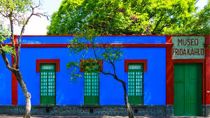
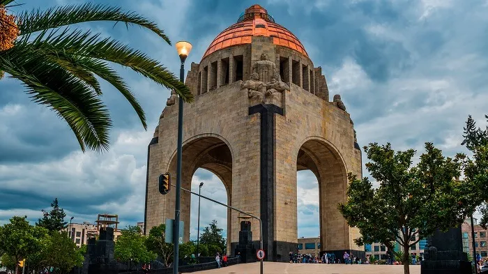
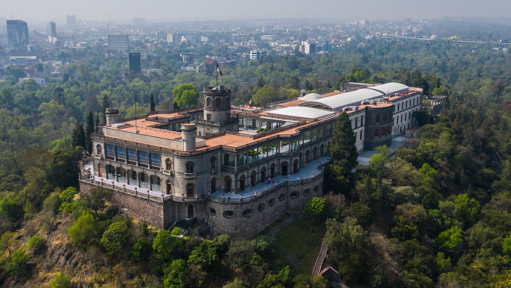
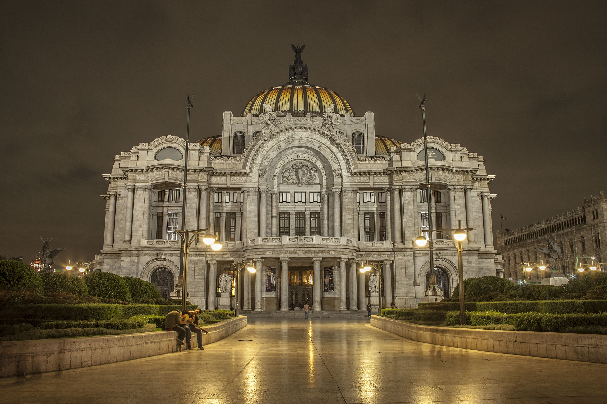
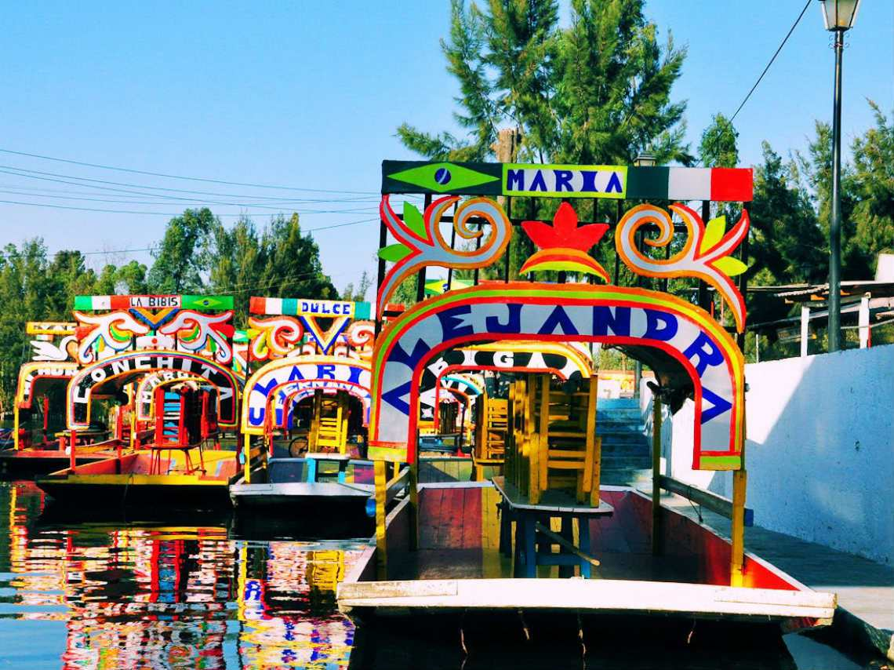
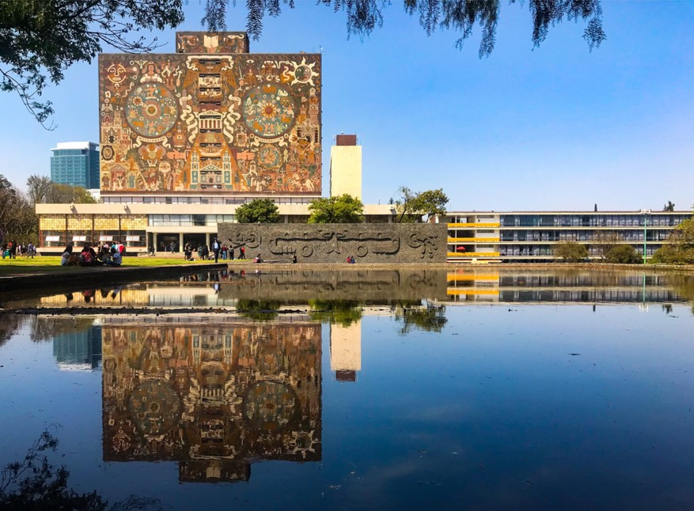
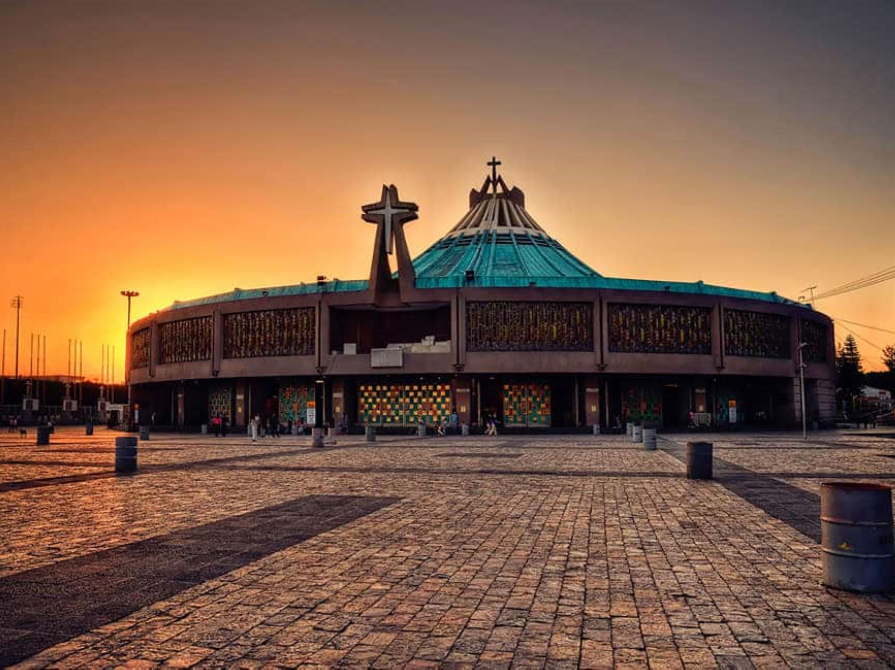
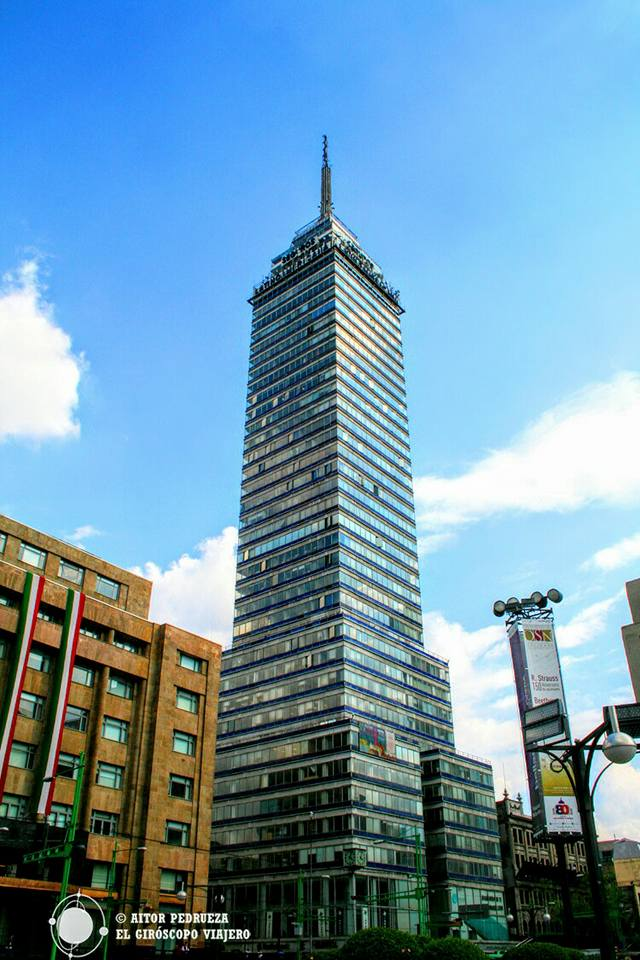

Dark Mode
🌃
Home
Discover
Directory
Join
Number of Visits:
Mexico City Gallery

Museum of Frida Kahlo

Revolution's Monument

Castle of Chapultepec

Palace of the Beautiful Arts

Xochimilco

UNAM University

Basilica of Guadalupe

Latinamerican Tower